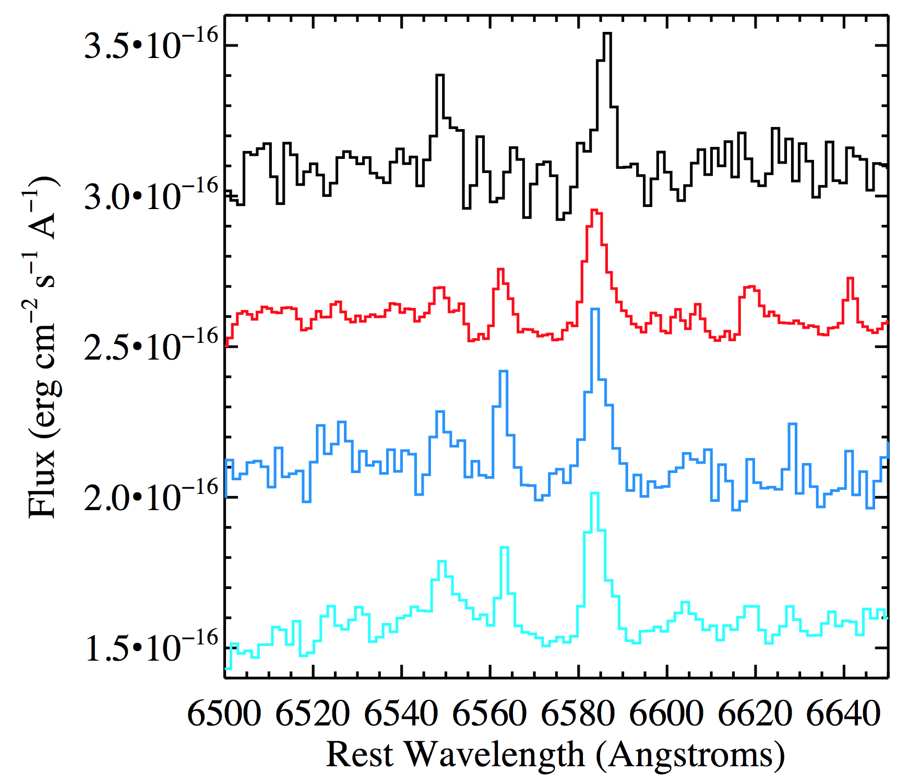

My name is Marie Wingyee Lau. I am a PhD candidate in Astronomy at UC Santa Cruz.
My thesis advisor is Prof J. Xavier Prochaska. I also work with Prof Joseph F. Hennawi of UC Santa Barbara, and Prof Graeme Smith and Prof Enrico Ramirez-Ruiz of UC Santa Cruz.
I obtained my Bachelor of Science in Physics from The Chinese University of Hong Kong in 2012. I obtained my Master of Science from UC Santa Cruz in 2015.
My email addresses are: lwymarie at ucolick dot org for research, wlau10 at ucsc dot edu for teaching, and lwymarie at gmail for personal matters.
My mailing address is Department of Astronomy, University of California, Santa Cruz, CA 95064.
My office is in the Interdisciplinary Science Building, Room 159.
I have a github presence.
My curriculum vitae is available here.
This page is last updated on August 1, 2017.

The Quasars Probing Quasars Survey
I am a major contributor to the Quasars Probing Quasars survey, led by Prof J. Xavier Prochaska (UC Santa Cruz) and Prof Joseph F. Hennawi (UC Santa Barbara). The QPQ survey selects closely projected pairs from SDSS. The sample comprises 700 pairs to date.
The figure on the right shows the experimental design of QPQ. Our line of sight to the background quasar is transverse to the foreground quasar, and intercepts its gaseous halo. Gas clumps transverse to the foreground quasar are largely un-illuminated by its ionizing radiation.
The figure below shows an example background-foreground quasar pair. In the background quasar spectrum we see strong Lyman-α and metal ion absorption coincident with the foreground quasar's redshift.

We found a high incidence of HI and CIV absorption in excess to IGM average, out to 1 Mpc transverse distance from the foreground quasars. We found the velocity widths measured in absorption exceed previous measurements of any galaxy populations.
I also contribute to Python codes for quasar pair spectral analysis.
Quasars Probing Quasars. VIII. The Physical Properties of the Cool Circumgalactic Medium Surrounding z ~ 2-3 Massive Galaxies Hosting Quasars
We characterize the physical properties of the cool T ~ 104 K circumgalactic medium surrounding z ~ 2-3 quasar host galaxies, which are predicted to evolve into present day massive ellipticals. Using a statistical sample of 14 quasar pairs with projected separation < 300 kpc and spectra of high dispersion and high signal-to-noise ratio, we find extreme kinematics with low metal ion lines typically spanning 500 km/s, exceeding any previously studied galactic population. The CGM is significantly enriched, even beyond the virial radius, with a median metallicity [M/H] = -0.6. The α/Fe abundance ratio is enhanced, suggesting that halo gas is primarily enriched by core-collapse supernovae. The projected cool gas mass within the virial radius is estimated to be 1.9×1011 M⊙ (R⊥/160 kpc)2, accounting for 1/3 of the baryonic budget of the galaxy halo. The ionization state of CGM gas increases with projected distance from the foreground quasars, contrary to expectation if the quasar dominates the ionizing radiation flux. However, we also found peculiarities not exhibited in the CGM of other galaxy populations. In one absorption system, we may be detecting unresolved fluorescent Ly-α emission, and another system shows strong NV lines. Taken together, these anomalies suggest that transverse sightlines are—at least in some cases—possibly illuminated. We also discovered a peculiar case where detection of the CII* fine-structure line implies an electron density >100 cm-3 and sub-parsec-scale gas clumps.
The figure below shows the cumulative mass profiles of total H and metals in the cool CGM. We constructed them using the median NH and the median [M/H] within 200 kpc.

The work is published in The Astrophysical Journal Supplement Series, Volume 226, Issue 2, article id. 25 (2016).
Quasars Probing Quasars. IX. The Kinematics of the Circumgalactic Medium Surrounding z ~ 2 Quasars
We examine the kinematics of the gas in the environments of galaxies hosting quasars at z ∼ 2. We employ 112 projected quasar pairs to study the circumgalactic gas of the foreground quasars in absorption. The sample selects foreground quasars with precise redshift measurements, using emission-lines with precision <= 300 km/s and average offsets from the systemic redshift <= |300 km/s|. We stack the background quasar spectra at the foreground quasar's systemic redshift to study the mean absorption in CII, CIV, and MgII. We find that the mean absorptions exhibit large velocity widths σv > 300 km/s. The observed widths are consistent with gas in gravitational motion and Hubble flow, and galactic-scale outflows are not required to explain the large widths. Furthermore, we find that the mean absorptions are asymmetric about the systemic redshift. The mean absorption centroids exhibit small redshift relative to the systemic δv = +200 km/s, with large intrinsic scatter in the centroid velocities of the individual absorption systems. We show that the observed offsets may be produced if (i) the ionizing radiation from the foreground quasars is anisotropic or intermittent; (ii) the gas is not flowing into the galaxy.
The figure below shows the mean absorption centered at CII 1334, CIV 1548, and MgII 2796 of the foreground quasars. Gaussian fits are overplotted. For the doublets, a second Gaussian with a fixed mean separation and a tied standard deviation is included in the fits.

Paper is submitted to The Astrophysical Journal in May 2017. ArXiv:1705.03476
Other than Quasars Probing Quasars, I am interested in the following.
Late Time Optical Spectral Signatures of Tidal Disruption Events: PTF-09ge
Although quasars are observable at cosmological distances, allowing a large statistical sample to be formed, they represent a short phase in galaxy evolution. If all galaxies host a massive black hole at their center, inactive massive black holes are hosted by 99.5% of all galaxies observed. Detection of inactive massive black holes is not longer limited to nearby systems, however, thanks to tidal disruption events. The properties of the flare resulting from a disruption are dependent on black hole properties. The motivation for this project is that tidal disruption events are often not followed-up beyond the first few years. We followed up 19 tidal disruption candidates with Shane/Kast from 2015 to 2017.
The object PTF-09ge is of particular interest to us. The flare happened in 2009 and was captured by Arcavi et al. (2014). The SDSS spectrum taken in 2003 shows no Hα emission. Our examination of their follow-up spectrum taken in 2013 reveals narrow Hα emission, which persists till 2015 in our follow-up spectra and faded in 2016. The [NII]6583/6548 ratio is higher than that in the pre-flare spectrum, implying the gas is less optically thick. From 2013 to 2016, The [NII] doublet ratio decreased and became closer to the ratio pre-flare. Over the same course, the [NII]/H%alpha; ratio increased, implying the spectrum became less like that of an active galactic nucleus.
The figure below shows the Hα-[NII] region of PTF-09ge. Black is taken in 2003, red is taken in 2013, and the blue and cyan are taken in 2015. For clarity we apply constant offets to the fluxes.
 I have taken follow-up spectra till Summer 2017. I work with Dr Lixin (Jane) Dai (Niels Bohr Institute), Dr James Guillochon (Harvard CfA), Prof Enrico Ramirez-Ruiz (UC Santa Cruz), and Prof J. Xavier Prochaska (UC Santa Cruz).Na and O Abundance Anomalies in Globular Clusters: Internal Mixing or Pre-enrichment?
The formation and evolution of galaxies can be probed via two techniques. First is through lookback studies, where one observes statistically the progenitors of present day galaxies at high redshifts. Second is through studying present-day properties of galaxies, including their stellar populations, to learn about their past evolution. For high-redshift gas, kinematics is easily measured, as in QPQ, however chemical abundances require ionization modeling. For stars, although they have lost the kinematics information at when they formed, chemical abundances can be easily measured. The two techniques are thus complementary. Milky Way globular clusters have metallicities lower than the systems studied in QPQ, hence the stellar archeology approach using them pushes even further back in redshift. Globular clusters are not chemically homogeneous, however, in particular in oxygen.
In this project we study red giants in 27 Milky Way globular clusters. We test against the hypothesis that the surface abundance variations entirely come from pre-enriched gas, as opposed to evolutionary effects of the observed stars themselves. We found that, other than the prototype Messier 13 (Johnson & Pilachowski 2012), NGC 6388 also shows significant anti-correlation between the [O/Fe] ratio and stellar luminosity. Eight globular clusters show significant anticorrelation between [Na/Fe] and stellar luminosity. Since the stars formed at about the same age, a dependence on luminosity translates to stellar evolution. Bimodality possibly exists in [Na/Fe] distribution of several globular clusters. We have further observed oxygen-poor red giants in Messier 13 with Shane/Kast for the CN absorption band, to investigate correlation patterns with Na and O.
The figure below shows surface [O/Fe] and [Na/Fe] for red giants in NGC 104. [Na/Fe] shows a positive dependence on stellar luminosity.

I work with Prof Graeme Smith (UCSC) for this project. Please ask me for a report written by my interns on the archival data. Analysis of the new Shane/Kast data is ongoing.
Hydrodynamic Simulations of Specific Star Formation Rates at z ~ 0.1
With Prof Peng Oh (UC Santa Barbara) and Prof Kristian Finlator (New Mexico State University), we use hydrodynamic simulations to test whether the properties of satellite galaxies are sensitive to models for quenching star formation in central galaxies. We evaluate the success of a simple halo quenching model in reproducing the observed dependence of quenched fractions of central and satellite galaxies on stellar mass and halo mass, as well as the observed stellar content in halos of different masses.
The figure below shows the fraction of galaxies that are satellites as a function of stellar mass. The solid blue curve is computed from an SDSS sample at z ~ 0.1 obtained from Kimm et al. (2009). The dashed blue curve is the satllite fractions computed from our simulation outputs without halo quenching. The solid cyan curve is from the simulation outputs with halo quenching.

Please ask me for a first draft of the paper.
A list of my publications is available here.
I have worked as a Teaching Assistant for eight different undergraduate astronomy and physics classes, under seven different instructors. My teaching philosophy is that, non-Western contributions in the history of science should be introduced to students.
I TA-ed a class for introducing research experience and cooperative homework labs to first-year and transfer students. Below is a photo of the final poster fair. The low resolution is intentional.

I have TA-ed the California State Summer School for Mathematics and Science (COSMOS) over two summers, where high school students carry out pre-scripted astronomy projects. The projects include eclipsing binaries, galactic rotation and redshift, Messier 80 color-magnitude diagram, Messier 87 and Antennae color-color diagrams, and the mass-metallicity relation of galaxies. Below is a card designed by my students.

I have advised four high school interns under the Science Internship Program (SIP), over two summers. We carried out a research project on the surface compositions of red giant stars in globular clusters. I led them through the Siemens Competition in Math, Science & Technology. Below is a photo of my interns presenting the project. The low resolution is intentional.

I have given private tutorials to high school students. I taught English as a second language (ESL) and Mathematics.
Before starting as a PhD student in Astronomy, I participated in short research projects in various physical science disciplines.
- I worked on Climate Change Sensitivity Evaluation from AIRS and IRIS Measurements, with Prof Yuk Yung in Caltech. I compared spectral data from two spaceborne instruments IRIS and AIRS that recorded Earth's outgoing radiation, which operated in 1970 and 2007 respectively. I then extracted greenhouse gas signals. The project resulted in an SPIE proceedings article.
- I worked on Determining Cloud Base and Thickness from Spaceborne Stereoscopic
Imaging and Lidar Profiling Techniques, with Dr Dong Wu in Jet Propulsion
Laboratory. I retrieved vertical structures of clouds from spectroscopic images taken by
the spaceborne instrument MISR. I validated the results against ground based measurement
data. The results were published in the
Caltech Undergraduate
Research Journal.

- I studied The Occurrence of High Winds and Severe Gusts during the Onset of Northeast Monsoon in Hong Kong, in the Hong Kong Observatory. I found that there is no correlation between a rapid rate of change in atmospheric pressure gradient and the subsequent arrival of gusts at surface. The study is completed. Please contact me for a project report.
- I studied Mechanical Vibration of Thin Plates for my senior thesis, with Prof Kenneth Young in The Chinese University of Hong Kong. Our approach is mathematical with no physical assumptions. The formulation through a power series expansion in wavenumber can be developed to high orders. Please contact me for a project report. A related publication can be found here.
I care about issues concerning international scholars. I have some suggestions, if you have access. This is a UCSC Astronomy video that I assisted with.
In addition to science, I also love animals, writing, and connecting people behind a computer screen.
Maintaining a minimalist homepage is an art. To this end, I made use of my free virtual assistant Steven Chi Yung Lau, who happens to be my younger brother.
APOD has some images of my hometown, where East meets West: Unsual clouds over Hong Kong, Hong Kong sky, Eclipse city